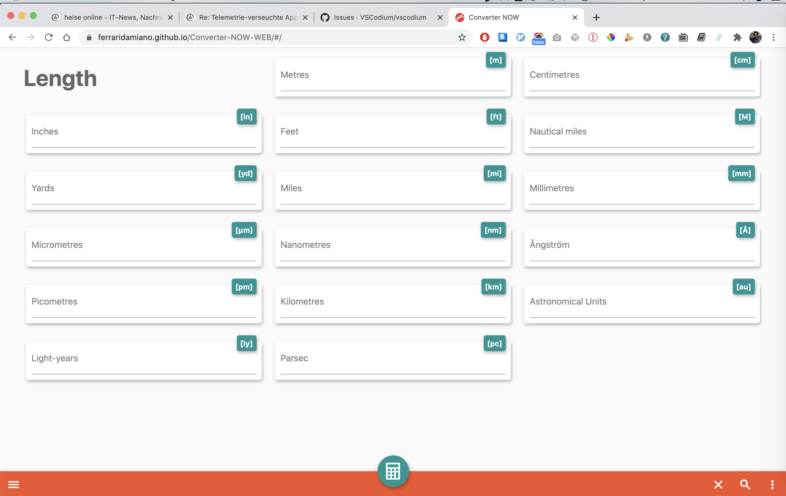
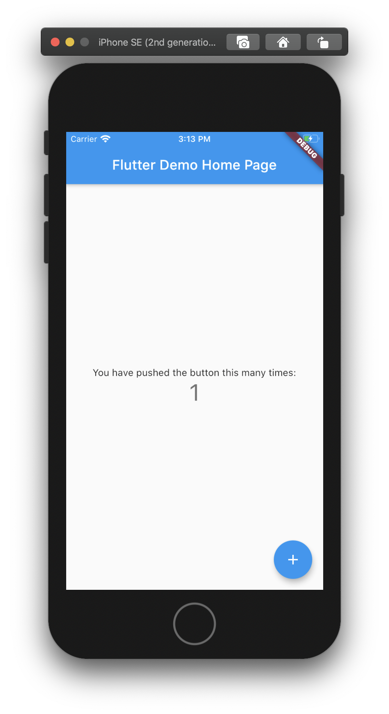
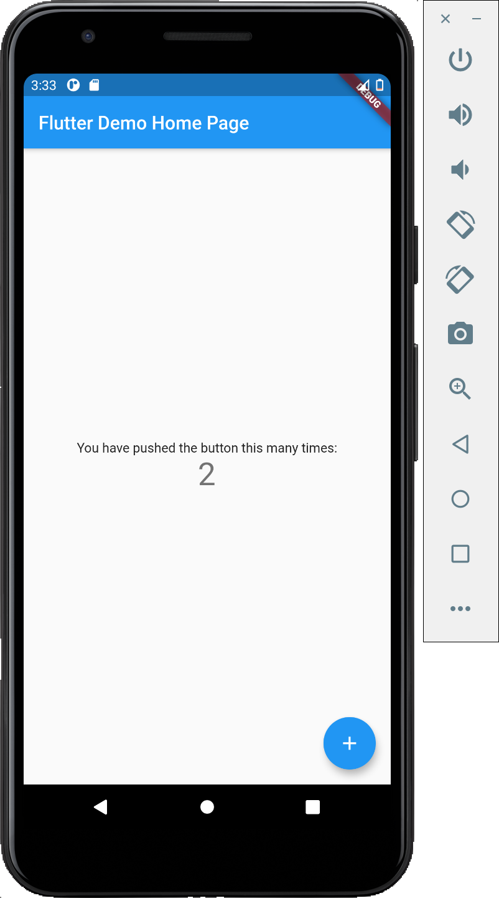
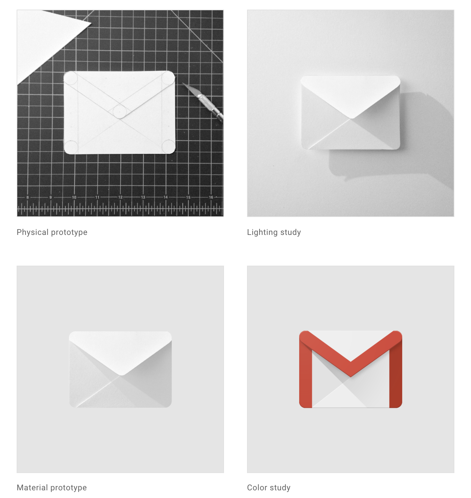
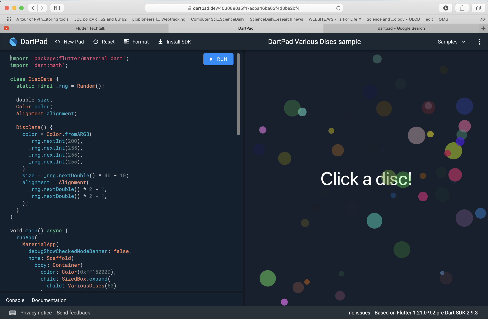

Techtalk
Einleitung
“ Flutter ist ein Open-Source UI-Entwicklungs-Kit von Google und basiert auf der Programmiersprache Dart. Laut Hersteller liegt der Fokus von Flutter auf kurzen Entwicklungszeiten, schneller Ausführungsgeschwindigkeit und "nativer User Experience". ”
Ziel
- Eine Codebasis für viele verschiedene Zielsysteme (Cross-Plattform-Funktionalität)
- Es soll überall eine Bildrate von 60Hz (bzw. 120 Hz) erreicht werden

Zielplattformen
Ein Flutter-Programm soll ohne größere Anpassungen auf folgenden Zielplattformen lauffähig sein:
- Android
- iOS
- Web
- Windows
- Linux
- macOS
- und Google Fuchsia
Alternativen?
“ React Native uses the JavaScript bridge to communicate with native modules, which results in poor performance. “
Aufbau
- Flutter ist in C++ geschrieben und
- verwendet die Dart Virtual Machine (Dart-VM)
- sowie die Grafikbibliothek Skia
WebApps werden nach JavaScript übersetzt und laufen direkt im Browser
Beispiel - WebApp
Beispiel - iOS
Beispiel - Android
Funktionsweise
On Android: Dart code is transpiled to Kotlin
On iOS: Dart code is transpiled to Swing

Material Design
- Flutter verwendet diese Designsprache von Google
- Objekte unterliegen physikalischen Gesetzen
- Benutzeroberflächen werden zunächst aus Pappe gebaut
Material
- Erschienen 2011 (vor 9 Jahren)
- Objektorientiert
- Garbage Collection
- C-style Syntax
- Ahead Of Time compilation (AOT)
- Just In Time compilation (JIT) (when needed)
class Bicycle {
int cadence;
int _speed = 0;
int get speed => _speed;
int gear;
Bicycle(this.cadence, this.gear);
void applyBrake(int decrement) {
_speed -= decrement;
}
void speedUp(int increment) {
_speed += increment;
}
@override
String toString() => 'Bicycle: $_speed mph';
}
void main(List<String> args) {
var bike = new Bicycle(2, 1);
print(bike);
}
DartPad - Online Editor
Minimal Flutter App
import 'package:flutter/widgets.dart';
main() => runApp(MyApp());
class MyApp extends StatelessWidget {
@override
Widget build(context) => Center(
child: Text('Hello Flutter!', textDirection: TextDirection.ltr)
);
}
Minimal Material App
import 'package:flutter/material.dart';
main() => runApp(MyApp());
class MyApp extends StatelessWidget {
@override
Widget build(context) {
return MaterialApp(
home: Scaffold(
body: Center(
child: Text('Hello World'),
),
),
);
}
}
Minimal Stateful App
import 'package:flutter/material.dart';
main() => runApp(MinimalStatefulApp());
class MinimalStatefulApp extends StatefulWidget {
@override
_MinimalState createState() => _MinimalState();
}
class _MinimalState extends State<MinimalStatefulApp> {
int _counter = 0;
@override
Widget build(BuildContext context) {
return GestureDetector(
onDoubleTap: () => setState(() => _counter++),
child: Center(
child: Text(
'Counter: $_counter',
textDirection: TextDirection.ltr,
),
),
);
}
}
Async/Await
import 'package:flutter/material.dart';
void main() => runApp(MaterialApp(
home: Scaffold(body:Center(child: MyWidget()))));
Future<String> callAsyncFetch() =>
Future.delayed(Duration(seconds: 2), () => "hi");
Async/Await
The callAsyncFetch function could be an HTTP call, a Firebase call, or a call to SharedPreferences or SQLite, etc. Anything that returns a Future 🔮
class MyWidget extends StatelessWidget {
@override
Widget build(context) {
return FutureBuilder<String>(
future: callAsyncFetch(),
builder: (context, AsyncSnapshot<String> snapshot) {
if (snapshot.hasData) {
return Text(snapshot.data);
} else {
return CircularProgressIndicator();
}
}
);
}
}
Async/Await
📭 no data… we show a progress indicator
✅ data from our future… we use it to feed any widgets for display!
❌ error from our future… we show an appropriate message
Fazit
- Design "passiert" automatisch. 🎨 Nur Hierarchie der Wigets muss definiert werden
- Schneller Weg zur nativen mobilen App
- Das Tooling ist super! 🛠
- Große Community
- Asychrone Programmierung
(ähnlich der Promise API in JS) ❤️
Kritik
“Optimize for the user and not the developer” -techlead
- Stimmt für große Unternehmen! GMail, GMaps, Instagram, Netflix usw sind alles nativ geschriebene Programme.
- Größere Firmen können es sich leisten, zwei Teams für iOS und Android zu angagieren und zu optmieren.